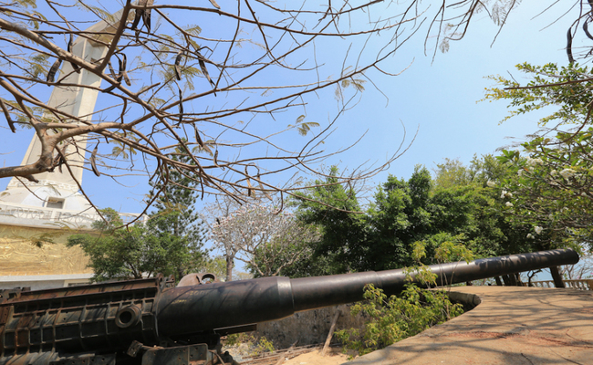

1. Nhà tù côn đảo
- Nhà tù Côn Đảo là một trong những di tích lịch sử nổi tiếng tại Côn Đảo, tỉnh Bà Rịa - Vũng Tàu. Nơi
đây đã từng là một trại tập trung tù nhân chính trị và được coi là một trong những nhà tù khắc nghiệt
nhất trên thế giới.
- Nhà tù Côn Đảo được xây dựng vào năm 1861, thời kỳ thuộc địa Pháp, và đã trải qua nhiều thời kỳ khác
nhau trong lịch sử. Từ năm 1954 đến 1975, nơi đây trở thành một trại tập trung tù nhân chính trị do
chính quyền miền Nam điều hành. Những người bị giam giữ tại đây phải chịu đựng những phương pháp tra tấn
và hành hình tàn nhẫn, gây ra nhiều chấn thương tâm lý và thể xác.
 - Ngày nay, nhà tù Côn Đảo đã được bảo tồn và trở thành một điểm đến lịch sử, thu hút nhiều du khách
trong và ngoài nước. Du khách có thể tham quan các phòng giam, những khu vực để tra tấn và hình phạt,
cùng với các phòng trưng bày tài liệu lịch sử và những câu chuyện về những người tù nhân từng bị giam
giữ tại đây. Ngoài ra, du khách còn có thể tham quan các công trình kiến trúc đặc sắc như tòa nhà chính,
tòa án và nhà thờ được xây dựng bởi người Pháp. Tuy nhiên, việc tham quan nhà tù Côn Đảo cũng đòi hỏi sự
nhạy cảm và tôn trọng với lịch sử và những nạn nhân của trại tù này.
2. Khu căn cứ Minh Đạm
- Nằm ở phía đông nam huyện Đất Đỏ, khu căn cứ Minh Đạm (hay còn gọi núi Minh Đạm) trước kia còn có tên
gọi là Châu Long – Châu Viên. Núi Minh Đạm dài 8km và độ cao là 355m, với 3 mặt giáp biển cùng nhiều
hang đá lớn nhỏ bí ẩn núp dưới những rừng cây, vách đá, suối nước ngọt róc rách quanh năm. Các tour du
lịch Vũng Tàu thường chọn nơi đây là điểm đến để giới thiệu cho du khách về lịch sử chiến đấu của dân
tộc cũng như để trải nghiệm sự hoang sơ, mộc mạc của hồn thiêng sông núi.
- Ngày nay, nhà tù Côn Đảo đã được bảo tồn và trở thành một điểm đến lịch sử, thu hút nhiều du khách
trong và ngoài nước. Du khách có thể tham quan các phòng giam, những khu vực để tra tấn và hình phạt,
cùng với các phòng trưng bày tài liệu lịch sử và những câu chuyện về những người tù nhân từng bị giam
giữ tại đây. Ngoài ra, du khách còn có thể tham quan các công trình kiến trúc đặc sắc như tòa nhà chính,
tòa án và nhà thờ được xây dựng bởi người Pháp. Tuy nhiên, việc tham quan nhà tù Côn Đảo cũng đòi hỏi sự
nhạy cảm và tôn trọng với lịch sử và những nạn nhân của trại tù này.
2. Khu căn cứ Minh Đạm
- Nằm ở phía đông nam huyện Đất Đỏ, khu căn cứ Minh Đạm (hay còn gọi núi Minh Đạm) trước kia còn có tên
gọi là Châu Long – Châu Viên. Núi Minh Đạm dài 8km và độ cao là 355m, với 3 mặt giáp biển cùng nhiều
hang đá lớn nhỏ bí ẩn núp dưới những rừng cây, vách đá, suối nước ngọt róc rách quanh năm. Các tour du
lịch Vũng Tàu thường chọn nơi đây là điểm đến để giới thiệu cho du khách về lịch sử chiến đấu của dân
tộc cũng như để trải nghiệm sự hoang sơ, mộc mạc của hồn thiêng sông núi.
- Núi Minh Đạm được bắt nguồn từ tên ghép của hai chiến sĩ cách mạng đã hi sinh khi đang bị phục kích ở
dưới chân núi – Bùi Công Minh và Mạc Thanh Đạm. Năm 1993, nơi đây đã được Bộ Văn hóa – Thông tin (tiền
thân của bộ Văn hóa, Thể thao và Du lịch) công nhận là di tích lịch sử cấp quốc gia và trở thành địa
điểm du lịch về nguồn lý tưởng cho du khách.
- Đến với Núi Minh Đạm ngoài việc tìm hiểu về lịch sử, bạn còn được tham quan nhiều nơi lý thú, đặt chân
vào những hang đá xưa kia từng là nơi làm việc, sinh hoạt của cán bộ, quân dân Bà Rịa – Vũng Tàu. Đứng ở
độ cao lý tưởng, bạn có thể phóng tầm nhìn ra biển cả mênh mông, sông núi hùng vĩ và càng thích thú hơn
nữa là những dải hoa anh đào trắng, hồng rực rỡ hiện diện trong tầm mắt. Hòa mình vào thiên nhiên giữa
cảnh vật đậm chất lịch sử vang bóng một thời này, bạn sẽ cảm thấy bình yên, tự tại nơi tâm hồn.
3. Trận địa pháo cổ
- Núi Lớn hay còn gọi là núi Tương Kỳ, là một ngọn núi cao 245m nằm ở thành phố Vũng Tàu, tỉnh Bà Rịa -
Vũng Tàu. Tại đây vẫn còn trận địa pháo cổ lớn nhất Đông Dương tồn tại nguyên vẹn hơn 100 năm qua.
- Công trình quân sự này được xây từ cuối thế kỷ 19 và hoàn thành năm 1905, nằm trên đỉnh Núi Lớn, cao
100m so với mặt nước biển. Việc xây dựng, vận chuyển, lắp dựng được thực hiện hoàn toàn bằng phương thức
thủ công, trong đó huy động phần lớn nhân công của tù nhân, dân phu người Việt.

- Phía sau dàn pháo khoảng 20m là hầm chỉ huy pháo binh, được xây dựng như một lô cốt nổi trên mặt đất.
Cách trận địa pháo khoảng 200m về phía tây có kho đạn pháo, hay còn gọi là hầm thủy lôi. Đây là 2 đường
hầm được đào xuyên vào trong lòng núi. Năm 1944 quân đội Nhật đã dùng hầm này để chứa thủy lôi để phong
tỏa vịnh Gành Rái và cửa biển Vũng Tàu. Bên trong hầm thủy lôi, mỗi hầm có diện tích khoảng hơn 100m2.
Thời chống Pháp (1945 - 1954), quân và dân Vũng Tàu đã bí mật lấy hàng chục trái thủy lôi (mỗi trái nặng
trên 100kg) để chế bom mìn tự tạo, tiêu diệt địch.
4.Khu di tích lịch sử Bạch Dinh
- Khu di tích Bạch Dinh nằm ở số 4-6 đường Trần Phú, phường 1, thành phố Bà Rịa - Vũng Tàu, tỉnh Bà Rịa
- Vũng Tàu. Địa điểm này cách bãi Sau - Thùy Vân khoảng 3.3km tương đương 10 phút lái xe. Với vị trí rất
thuận tiện cho việc di chuyển cùng với ưu điểm sở hữu nét kiến trúc ấn tượng, Bạch Dinh luôn là địa điểm
đông đúc khách du lịch.
- Bạch Dinh là một tòa biệt thự cổ được phủ lên một màu trắng sang trọng, có mặt tiền hướng biển bãi
Trước. Căn biệt thự này bao gồm 3 tầng lầu với bề dài khoảng 25m và chiều cao khoảng 19m. Nhìn từ xa bạn
sẽ cảm giác đây là một ngôi nhà cổ ở phương Tây bởi những chi tiết đặc trưng như của vòm cong, mái ngói,
cửa gỗ và một số hoa văn điêu khắc mang đậm phong cách phương Tây.
- Nơi đây được xây dựng từ năm 1898 và xây trong suốt 4 năm, sau đó được trưng dụng làm nơi nghỉ mát cho
hoàng đế Bảo Đại, các đời tổng thống của Việt Nam thời xưa và toàn quyền Đông Dương. Cho đến năm 1907,
Bạch Dinh trở thành nơi giam lỏng vua Thành Thái trong suốt 9 năm. Trải qua nhiều năm tháng và những cột
mốc lịch sử đáng nhớ của Việt Nam, Bạch Dinh ngày nay vẫn giữ nguyên vẹn vẻ đẹp trầm mặc của một ngôi
biệt thự cổ có phần lộng lẫy được bao quanh bởi khung cảnh thiên nhiên biển cả, rừng cây.
- Bên trong Bạch Dinh hiện nay vẫn còn lưu giữ những hiện vật cổ hơn trăm nay như những bộ bàn ghế bằng
gỗ sang trọng sáng bóng được điêu khắc những hoa văn tinh tế, bộ tam đa ngũ thái Phúc Lộc Thọ, cặp ngà
voi Châu Phi, hai chiếc bình Bách Điểu Chầu Phụng,....Phần lớn các chi tiết trang trí ở Bạch Dinh được
chế tác từ sứ men, dọc theo các bức tường là các họa tiết cá chép uốn lượn, đôi chim xòe cánh,... Hiện
nay, Bạch Dinh đang là nơi trưng bày khẩu súng thần công thời xưa và bộ sưu tầm gốm sứ rất quý hiếm của
thời Khang Hy được tìm thấy ở Hòn Câu - Côn Đảo.
5. Đình thần Long Hương
- Đình thần Long Hương (khu phố Hương Điền, phường Long Hương, TP.Bà Rịa) được xây dựng cách đây hơn 200
năm (khoảng từ năm 1788-1802). Trải qua bao thăng trầm lịch sử, nét kiến trúc và các lễ hội của đình
thần Long Hương được bảo tồn, phát huy giá trị văn hóa tâm linh của người dân địa phương.
- Đình thần Long Hương hình thành từ đời vua Minh Mạng. Ban đầu, đình được xây dựng trên một gò đất cao
đầu làng trên diện tích gần 2 sào đất. Cũng như nhiều ngôi đình khác ở Nam bộ, đình Long Hương thờ thần
Thành Hoàng Bổn Cảnh, là một đấng thiêng liêng mà cũng rất gần gũi với dân chúng, phù hộ, giúp đỡ cuộc
sống của người dân. Năm 1852, niên hiệu Tự Đức thứ 5, đình Long Hương được phong sắc thần với chức sắc
“Đại Nguyên Soái Thủy Lục Bình Quân Đại Nguyên Soái”. Từ đó, dân làng quy tụ ngày một đông hơn, việc làm
ăn cũng thuận lợi hơn, vì vậy đình thần Long Hương càng được chăm chút tu sửa, sắc thần càng được thờ
phụng chu đáo.
- Trong 2 cuộc kháng chiến của quân và dân Bà Rịa, Đình thần Long Hương còn là nơi che chở, nuôi giấu
các cán bộ hoạt động cách mạng. Dựa vào đặc thù của khuôn viên đình vừa có cây cối rậm rạp, vừa có nhiều
cây dầu cao lớn, lực lượng du kích địa phương đã tận dụng làm nơi quan sát canh gác địch từ nhiều phía
để chủ động tấn công địch, tạo nên nhiều chiến công vang dội, góp phần vào công cuộc giải phóng đất
nước. Trải qua bao thăng trầm của lịch sử và thời gian, lưu giữ những giá trị lịch sử, năm 2007 đình
thần Long Hương đã được UBND tỉnh ban hành quyết định công nhận là di tích lịch sử văn hóa kiến trúc
nghệ thuật cấp tỉnh.
6. Di tích danh thắng Thích Ca Phật Đài
- Thiền viện Thích Ca Phật Đài được xây dựng vào năm 1952, bởi một số sư phụ đã được tu nghiệp tại Ấn Độ
và Trung Quốc. Ngôi chùa ban đầu chỉ là một cơ sở nhỏ để các sư phụ có thể tập trung tu hành và giảng
dạy Phật pháp cho những người dân trong vùng. Sau đó , Thiền viện Thích Ca Phật Đài đã được mở rộng và
nâng cấp để trở thành một trung tâm du lịch tâm linh được nhiều khách du lịch trong và ngoài nước yêu
thích.
- Thiền viện Thích Ca Phật Đài có kiến trúc được thiết kế theo phong cách kiến trúc Á Âu, với sự kết hợp
giữa các yếu tố kiến trúc truyền thống Việt Nam và châu Âu. Khuôn viên của Thiền viện rộng lớn, có các
khu vườn hoa, đài phật, chùa Kim Sơn, nhà sư và các công trình kiến trúc khác.
- Điểm đến này còn có nhiều hoạt động tâm linh cho du khách tham gia, bao gồm cầu nguyện, học Thiền và
yoga, tham gia các khóa tu tập, và tham quan các ngôi chùa và tượng Phật đặc sắc tại khuôn viên Thiền
viện. Ngoài ra, Thiền viện Thích Ca Phật Đài còn là địa điểm hấp dẫn cho các nhiếp ảnh gia và những
người yêu thích thiên nhiên và kiến trúc, bởi vẻ đẹp tự nhiên hoang sơ cùng các công trình kiến trúc độc
đáo.
- Trong khuôn viên Thiền viện còn có các hoạt động văn hóa, nghệ thuật như đại lễ chùa, hội diễn các
hình thức nghệ thuật, và những hoạt động giáo dục cộng đồng. địa phương và khách du lịch đến Với một
không gian yên tĩnh, thanh bình và nằm giữa cảnh quan thiên nhiên đẹp, Thiền viện Thích Ca Phật Đài là
một điểm đến tuyệt vời cho những ai muốn tìm kiếm sự tĩnh lặng và an nhiên.
7. Di tích lịch sử cách mạng ngôi nhà 42/11 (nhà má Tám Nhung)
- Nhà má Tám Nhung (Hồ Thị Khuyên) là một di tích lịch sử cách mạng nổi tiếng tại thành phố Vũng Tàu,
tỉnh Bà Rịa - Vũng Tàu. Ngôi nhà này nằm ở địa chỉ số 1 Trần Xuân Độ, phường Thắng Nhì, thành phố Vũng
Tàu. Trước đây, nơi đây là một khu vườn rậm rạp, yên tĩnh gồm nhiều cây ăn trái do ông bà Tám Nhung khai
phá và xây dựng.
- Vào những ngày cách mạng tháng Tám năm 1945, ngôi nhà này đã trở thành nơi họp của Ủy ban mặt trận
Việt Minh. Trong hai cuộc kháng chiến, ngôi nhà này đã trở thành cơ sở nuôi dấu cán bộ hoạt động trong
nội ô của Tỉnh ủy, Thị ủy Vũng Tàu.
- Với giá trị lịch sử và ý nghĩa tiêu biểu, vào năm 1989, Nhà má Tám Nhung đã được Bộ Văn hóa Thông tin
công nhận là di tích cấp quốc gia.
- Hiện nay, ngôi nhà của má Tám Nhung đã được trùng tu, tôn tạo vào năm 2015 để bảo tồn và phục hồi giá
trị của di tích. Ngôi nhà này đã trở thành một điểm tham quan giáo dục truyền thống về một bà mẹ Việt
Nam tiêu biểu, sáng người chủ nghĩa anh hùng cách mạng của thành phố Vũng Tàu. Má Tám Nhung được mô tả
là một người giản dị, nhân hậu, trung kiên và bất khuất, đã hết lòng ủng hộ, bí mật nuôi dấu cán bộ cách
mạng an toàn cho đến ngày miền Nam giải phóng, đất nước được thống nhất.
8. Di tích trụ sở Ủy ban Việt Minh tại Vũng Tàu
- Nhà truyền thống cách mạng Việt Minh tại TP. Vũng Tàu nằm tại số 1 đường Ba Cụ, phường 1, TP. Vũng
Tàu, tỉnh Bà Rịa - Vũng Tàu. Đây là nơi đóng trụ sở của Ủy ban Việt Minh tại Vũng Tàu trong suốt thời kỳ
chiến tranh giải phóng dân tộc.
- Nhà truyền thống cách mạng Việt Minh tại TP. Vũng Tàu được xây dựng vào thập niên 1940 và trở thành
trụ sở của Ủy ban Việt Minh từ năm 1945. Tại đây, các lãnh đạo cách mạng đã họp và lên kế hoạch cho các
hoạt động cách mạng trong khu vực Vũng Tàu.
- Sau khi miền Nam giải phóng, nhà truyền thống cách mạng Việt Minh tại TP. Vũng Tàu được bảo tồn và trở
thành một di tích lịch sử quan trọng. Hiện nay, ngôi nhà đã được trùng tu và mở cửa đón khách tham quan,
giúp du khách hiểu rõ hơn về lịch sử đấu tranh giải phóng dân tộc của Việt Nam.
- Nhà truyền thống cách mạng Việt Minh tại TP. Vũng Tàu là một trong những điểm đến du lịch lịch sử hấp
dẫn ở địa phương, thu hút nhiều du khách đến tham quan và tìm hiểu về lịch sử cách mạng của Việt Nam.
9. Di tích lịch sử cách mạng “Nhà cao cẳng” số 18 Lê Lợi
- Nhà cao cẳng là một di tích lịch sử cách mạng nằm ở số 18 đường Lê Lợi, phường 1, thành phố Vũng Tàu,
tỉnh Bà Rịa - Vũng Tàu. Ngôi nhà này được xây dựng vào những năm 1950, được sử dụng làm trụ sở của Tỉnh
ủy Bà Rịa - Long Khánh trong những năm kháng chiến chống đế quốc Mỹ.
- Nhà cao cẳng rộng 160m2, và sở dĩ có tên gọi như vậy vì phía dưới ngôi nhà là hàng 4 dãy cột đá, mỗi
cột cao 2,2m, cạnh vuông 40cm như đôi chân chống đỡ ngôi nhà. Nhà được xây dựng theo kiến trúc kiểu nhà
nghỉ biệt lập, có hàng rào, sân vườn bao quanh
- Nhà cao cẳng đã được sử dụng làm trụ sở của Tỉnh ủy Bà Rịa - Long Khánh và là nơi diễn ra nhiều cuộc
họp bí mật của các lãnh đạo cách mạng trong suốt thời gian kháng chiến chống Mỹ. Nhiều quyết định quan
trọng đã được đưa ra và thực hiện tại đây, góp phần quan trọng vào sự phát triển của phong trào cách
mạng tại địa phương.
- Hiện nay, nhà cao cẳng đã được công nhận là di tích lịch sử cách mạng cấp tỉnh và trở thành một địa
điểm du lịch thu hút nhiều khách du lịch đến tham quan và tìm hiểu về lịch sử đấu tranh giành độc lập
của dân tộc Việt Nam.
10. Di tích lịch sử cách mạng nhà số 86 - Phan Chu Trinh
- Nhà số 86 Phan Chu Trinh (hiện tại đổi thành số 5 Phan Chu Trinh), tọa lạc tại phường 2, thành phố
Vũng Tàu, tỉnh Bà Rịa - Vũng Tàu, được xây dựng vào đầu thế kỷ 20 theo lối kiến trúc của Pháp. Ban đầu,
đây là nhà của viên quan tư người Pháp Pierre Chappus (sinh năm 1878). Sau khi Việt Nam giành độc lập,
ngôi nhà được sử dụng để nuôi giấu các cán bộ hoạt động cách mạng.
- Với vị trí gần biển và nằm trong một khuôn viên rộng, ngôi nhà có 2 tầng, với diện tích sử dụng khoảng
500m2. Phía trước có một sân rộng, còn phía sau có một khu vườn nhỏ với nhiều cây xanh bao phủ. Nhà được
xây dựng bằng gạch, bê tông, bột đá, với các cửa sổ lớn, một mặt tiền sang trọng và nhiều chi tiết kiến
trúc đẹp mắt.
- Nhà số 86 Phan Chu Trinh từng là nơi trú ẩn của các cán bộ cách mạng trong những năm đầu cuộc chiến
tranh giành độc lập của Việt Nam. Những cán bộ này đã tận dụng sự bảo vệ của ngôi nhà để phát triển hoạt
động cách mạng và làm việc với nhau. Sau khi chiến tranh kết thúc, nhà số 86 Phan Chu Trinh được xác
định là di tích lịch sử cấp Quốc gia và mở cửa cho du khách đến tham quan.
11. Đền thờ Trần Hưng Đạo
- Di tích lịch sử cách mạng Đồn nhà máy nước Vũng Tàu là một trong những địa danh lịch sử quan trọng của
TP. Vũng Tàu, nằm trên đường 30/4, phường 9, TP.Vũng Tàu, giữa Trường THPT Trần Nguyên Hãn và Công ty CP
Cấp nước BR-VT.
- Đồn nhà máy nước được xây dựng từ năm 1909 dưới thời thống trị của người Pháp, có vai trò sản xuất
nước sinh hoạt và công nghiệp cho dân cư và các cơ quan chính quyền trong vùng. Trong thời kỳ chiến
tranh, đây là một trong những địa điểm chiến đấu quan trọng của các lực lượng cách mạng.
- Đặc biệt, vào ngày 17/8/1945, Đồn nhà máy nước Vũng Tàu đã trở thành địa điểm đầu tiên của việc tổ
chức tự quyết dân chủ ở miền Nam. Tại đây, các lãnh đạo cách mạng đã thông báo việc thành lập Cách mạng
miền Nam và đọc Tuyên ngôn độc lập miền Nam, khởi đầu cho một chuỗi sự kiện lịch sử quan trọng của Việt
Nam.
- Ngày nay, Di tích lịch sử cách mạng Đồn nhà máy nước Vũng Tàu được coi là một trong những di tích lịch
sử quan trọng của TP.Vũng Tàu, tạo nên sự độc đáo, thu hút khách du lịch tìm hiểu về lịch sử đấu tranh
của dân tộc Việt Nam.